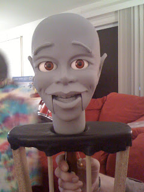
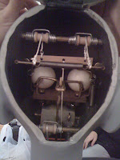

And the winner is...
2/2/2010
After considerable consideration of the more that 40 entries for the "McElroy Magic" book give-away, I have selected Terry Ottinger as the winner.
There was more written with his entry, but from what I have posted here I believe, (or hope), you will agree that Terry is a worthy recipient of Greg Claassen's "McElroy's Magic!" http://gregclaassen.com/For_Sale.html
There are several reasons a person would want to own a copy of this book, and you who entered certainly covered them all. But the author's primary purpose in producing this book was to explain in detail the intricate McElroy mechanics and how to construct them. And I could see there were several entrants who would put that section of the blog to good use. You made it a difficult choice, but with only one book in hand, I had to make a choice. Congratulations Terry!
Terry is a novice figuremaker, but he has already put his passion into action. You see his first work here. Terry described his efforts as follows:
{kind=link}

" I follow your blog daily and its pretty safe to say I am obsessed with ventriloquist figures. My love for figures began as a child the very first time I saw Jay Johnson and Bob on the TV series, Soap. From that moment I have been on a mission to know everything that I possibly could about the creation of ventriloquist figures and the wonderful artists and craftsmen who create them. I've emailed you a few times for some of these answers. I was the guy with all of the Willie Tyler and Lester questions (I absolutely LOVE Lester as well). I'm an artist and I draw, paint and sculpt. Recently I decided to combine these three skills and build my first figure. The one thing I discovered along the way was how little information was available on figure making. I've picked up the Michael Brose book, Figure Making Can Be Fun, as well as Make Your Own Dummy by William H Andersen (which I purchased from you), Dummy Days, Jim Henson, The Works, etc...
"These photos are of my first attempt. I sculpted the head with an epoxy putty called Magic Sculp. It's a moldless casting executed in the same kind
{kind=link}

of way William Andersen describes in the (how to) manual I purchased from you. I sculpted a clay version a half inch or so smaller than I wanted the finished head to be, and then placed the epoxy putty over this. When it set up I removed the clay and bonded the front and back together. I was going to make a mold of him but I later changed my mind and decided to keep this fellow a one of a kind. I was aiming for something as classic looking as I could. My unfinished friend has a slot jaw mouth, ball and socket neck, side to side eyes, raising eyebrows, a spitter and a full set of upper and lower teeth. This is my first attempt at building a figure so I plan on holding on to him. I do plan on making a mold with the next one so I can create duplicate castings. I've been bitten by the figure making bug so hard I can see myself building figures for the rest of my life(and loving every minute of it)."There was more written with his entry, but from what I have posted here I believe, (or hope), you will agree that Terry is a worthy recipient of Greg Claassen's "McElroy's Magic!" http://gregclaassen.com/For_Sale.html